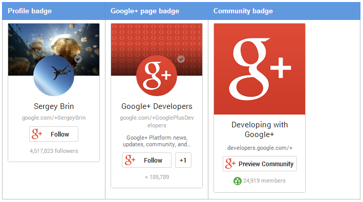
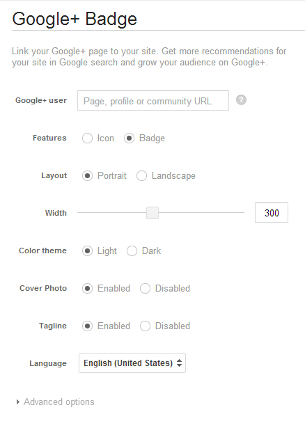
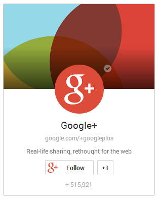
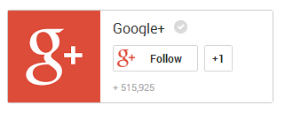
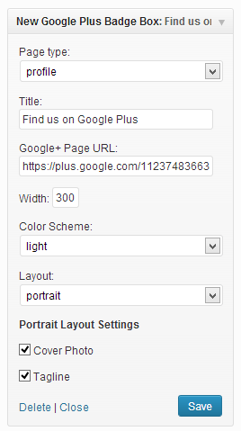

You must be aware that Google plus one on your content and content sharing on Google+ improves the search engine ranking. We have already shared how to add Google+ button and Google+ comments to a WordPress site. In this post we are gonna see how to add Google+ “Add to Circles” badge to WordPress.
Before we go through the steps to adding Google+ badge, let’s have a look at the types of badges

As you can see Google+ provides different -2 kind of badges such as profile page (for author, contributors etc.), Google+ page badge (for your website’s brand page on G+) and Community badges.
How to add Google+ Badge to WordPress Site?
1) Manually adding the code to theme’s template for Google+ badge
2) WordPress plugin to add the Google+ badge widget to the site
1) Manually adding the code to theme’s template for Google+ badge
Go to Google+badge – developers page and enter the Google+ url in the Google+ user field

Choose the options like cover photo, tagline, width, Asynchronous loading etc and copy the code which would look like the below one –
<!-- This is for button: Place this tag where you want the widget to render. -->
<div class="g-page" data-layout="landscape" data-rel="publisher"></div>
<!-- Its a script: Place this tag after the last widget tag. -->
<script type="text/javascript">
(function() {
var po = document.createElement('script'); po.type = 'text/javascript'; po.async = true;
po.src = 'https://apis.google.com/js/plusone.js';
var s = document.getElementsByTagName('script')[0]; s.parentNode.insertBefore(po, s);
})();
</script>
Most of the times, we prefer to have the badge in the sidebar so go to Appearance » Widgets » Text Widget, copy the above code and save it. That’s it!! the badge should be showing up in your sidebar.
Portrait layout:
The below badge has portrait layout. The above shared code is for landscape layout. The data-layout need not to be mentioned as this is a default layout. The button code for this layout is:
<!-- Portrait style badge --> <div class="g-page" data-rel="publisher"></div>

Landscape layout:
This is how landscape style badge looks like. The data-layout field can be set as landscape to have this layout.
<!-- Landscape style badge --> <div class="g-page" data-layout="landscape" data-rel="publisher"></div>

2) WordPress plugin to add the Google+ widget to the site
Download the New Google+ badge widget plugin, upload, install and activate it. A widget would be added to the blog upon activating this plugin. Configure the settings in the widget itself as shown below and save it.

Conclusion
Adding Google+ badge to your site is easy and beneficial as the readers, who loves your content would get chance to know you better and to follow you on Google+. This is good for website’s traffic too. We have also shared the tutorials for adding Facebook like and twitter button to a WordPress site. Let us know if you face any issues while following up the above mentioned steps.
Hi Chaitanya,
Thanks for this very helpful tutorial. I was able to make the addition to my sidebar in less than 2 minutes.
Cheers,
Jackson
Hi Chaitanya,
The Text Widget thing does not work for ‘wordpress.com’ sites, is it exclusive to ‘wordpress.org’ sites? When I pasted the code in the Text Widget, it showed up as plain text and not as a Google+ badge on my sidebar in my site. Please help !